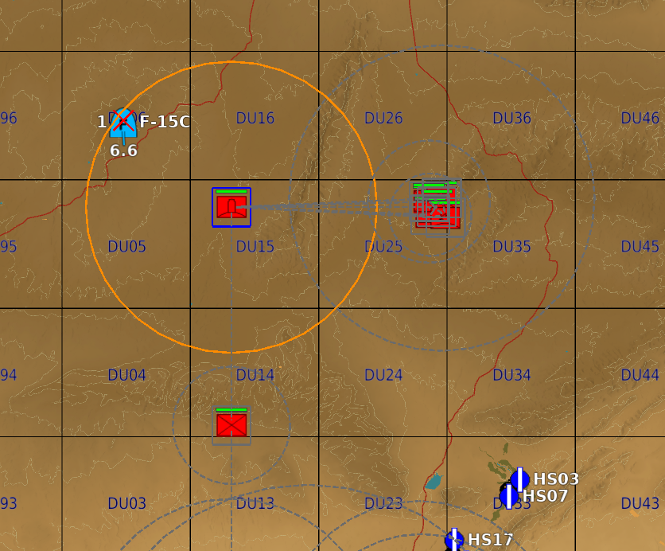
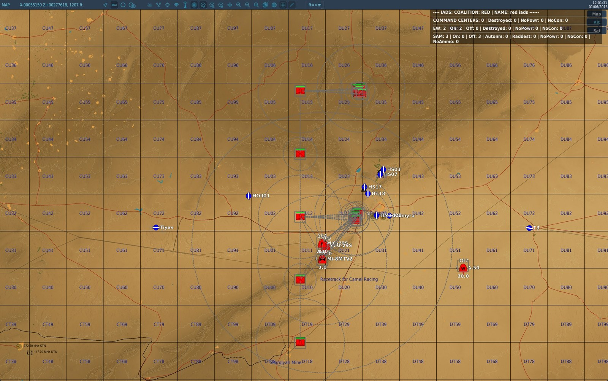
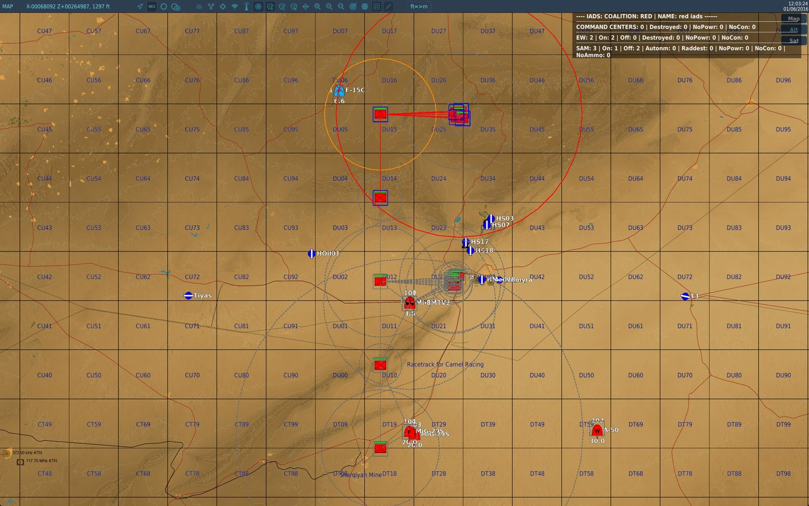
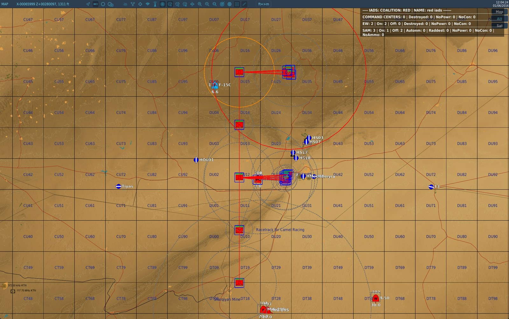
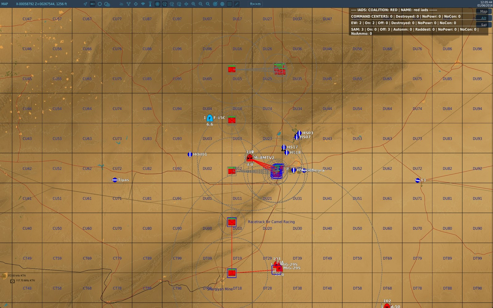
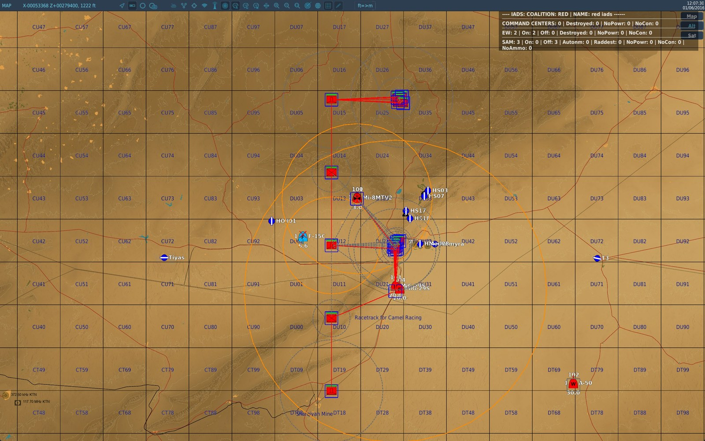

veafSkynetIadsHelper — Intégration Skynet IADS¶
Module ID : SKYNET | Fichier : veafSkynetIadsHelper.lua | Table Lua : veafSkynet
Objectif¶
Skynet-IADS est un script tiers qui pilote les systèmes radar antiaériens afin qu'ils optimisent leur survivabilité et leur léthalité en restant éteints le plus possible. Il simule un IADS (Integrated Air Defence System) dans lequel les EWR (Early Warning Radar) scannent le ciel et communiquent leurs détections aux sites SAM, permettant à ceux-ci de ne s'activer que lorsqu'ils sont en capacité d'engager un contact.
veafSkynetIadsHelper automatise la construction de ces réseaux à partir des groupes présents dans la mission, et fournit des outils pour les surveiller, les contrôler et les lier à des objectifs de mission.
Prérequis¶
- Le script Skynet IADS doit être téléchargé séparément et chargé avant
veafSkynetIadsHelper - Configurer via
mission.yaml(recommandé) ou dansmission-script.luapour les options avancées non disponibles en YAML
Configuration (mission.yaml)¶
modules:
SKYNET:
enabled: true
include_red_in_radio: false # afficher l'état du réseau rouge dans le menu F10
debug_red: false # logs détaillés Skynet pour le réseau rouge
include_blue_in_radio: false # afficher l'état du réseau bleu dans le menu F10
debug_blue: false # logs détaillés Skynet pour le réseau bleu
dynamic_spawn: false # intégrer aussi les groupes apparus en cours de mission
spotter_network: false # les unités au sol voient les avions et se passent le mot
spotter_radio_range_km: 20 # portée d'un relais radio
spotter_propagation_speed_kmh: 3600 # vitesse de l'alerte sur le réseau
spotter_view: "off" # "off" | "on" | "radio" — vue carte F10 (guillemets obligatoires)
last_line_of_defence: true # un site éteint garde un rayon court et s'y allume seul
last_line_of_defence_min_radius_km: 10
last_line_of_defence_max_radius_km: 15
last_line_of_defence_persistence_s: 45
coverage_refresh_interval_s: 10
| Champ | Type | Défaut | Description |
|---|---|---|---|
enabled |
booléen | false |
Activer l'intégration Skynet |
include_red_in_radio |
booléen | false |
Ajouter l'état IADS rouge au menu radio F10 |
debug_red |
booléen | false |
Debug verbeux Skynet pour la coalition rouge |
include_blue_in_radio |
booléen | false |
Ajouter l'état IADS bleu au menu radio F10 |
debug_blue |
booléen | false |
Debug verbeux Skynet pour la coalition bleue |
dynamic_spawn |
booléen | false |
Intégrer aussi les groupes apparus en cours de mission — voir Apparitions en cours de mission |
spotter_network |
booléen | false |
Activer le réseau de guetteurs — voir Réseau de guetteurs |
spotter_radio_range_km |
nombre | 20 |
Distance à laquelle un groupe peut relayer une alerte, en kilomètres |
spotter_propagation_speed_kmh |
nombre | 3600 |
Vitesse à laquelle l'alerte traverse la carte, en km/h |
spotter_view |
"off" | "on" | "radio" |
"off" |
Vue carte F10 du réseau — voir Voir ce qui se passe, sur la carte |
last_line_of_defence |
booléen | true |
Un site éteint garde un rayon court et s'y allume seul — voir Dernière ligne de défense |
last_line_of_defence_min_radius_km |
nombre | 10 |
Borne basse du rayon, en kilomètres |
last_line_of_defence_max_radius_km |
nombre | 15 |
Borne haute du rayon, en kilomètres |
last_line_of_defence_persistence_s |
nombre | 45 |
Durée pendant laquelle le site reste allumé après le dernier passage, en secondes |
coverage_refresh_interval_s |
nombre | 10 |
Intervalle entre deux balayages du graphe de couverture, en secondes (0 = jamais) |
Activation (via mission-script.lua)¶
if veafSkynet then
veafSkynet.PointDefenceMode = veafSkynet.PointDefenceModes.Skynet
veafSkynet.GroupIntegrationMode = veafSkynet.GroupIntegrationModes.Strict
veafSkynet.DynamicSpawn = false
veafSkynet.DelayForStartup = 5
veafSkynet.initialize(
false, -- includeRedInRadio
false, -- debugRed
false, -- includeBlueInRadio
false -- debugBlue
)
end
Principes de fonctionnement¶
Le module parcourt la liste de tous les groupes de la mission au démarrage, et ajoute ceux qui sont éligibles dans les réseaux IADS Skynet. Cette initialisation se fait avec un délai paramétrable (DelayForStartup) pour laisser les autres modules s'initialiser en premier. Les groupes en activation retardée sont intégrés au démarrage, mais pas les groupes générés dynamiquement (sauf si DynamicSpawn = true).
Le module crée toujours deux réseaux Skynet : un pour la coalition bleue, un pour la coalition rouge.
Seuls les groupes que DCS possède encore sont intégrés. La nuance a son importance : DCS continue de lister pendant un court instant les groupes qu'il vient de détruire, et l'initialisation du module arrive juste après le nettoyage que fait chaque zone de combat au démarrage. Un tel groupe apparaissait auparavant dans le réseau comme un site SAM dont le radar n'a jamais existé — compté « radar détruit » sur la page de statut IADS pour toute la mission.
Ce qu'un site du réseau voit — et ne voit pas¶
C'est la mécanique qui surprend le plus, et elle a déjà été signalée comme un bug alors qu'elle fonctionnait comme prévu. Un site SAM pris en charge par un réseau a son radar éteint. Il ne voit donc rien par lui-même.
Les deux façons dont un site s'allume¶
| Ce qui le déclenche | |
|---|---|
| Un EWR le renseigne | Un radar de veille voit l'avion et transmet le contact au site, qui s'allume si le contact entre dans son enveloppe de tir |
| Sa dernière ligne de défense | L'avion entre dans le rayon court que le site garde pour lui — voir Dernière ligne de défense |
La proximité seule n'est pas une troisième façon. En dehors du rayon de dernière ligne de défense, un avion peut passer à la verticale d'une batterie sans que rien ne réagisse, si aucun EWR ne l'a vu.
La disparition des EWR rend les sites restants plus agressifs¶
C'est contre-intuitif, et c'est le comportement attendu. Un site qui n'a plus aucun EWR pour le renseigner bascule en autonome : Skynet le rend à l'IA de DCS, qui allume tout, tout le temps. Détruire les radars de veille ne désarme donc pas la défense, ça la rend aveugle mais agressive.
« Couvert » ne veut pas dire « renseigné »¶
La page de statut liste, sous chaque EWR, les batteries qu'il « couvre ». La couverture est une simple distance à plat entre le radar de l'EWR et celui de la batterie, comparée à la portée de détection de l'EWR. Elle ignore l'horizon, le relief et l'altitude.
Autrement dit, elle dit que l'EWR est près de la batterie, jamais qu'il est en train de la renseigner. Un seul 55G6 peut lister dix-huit batteries sous sa couverture pendant qu'il ne voit aucun avion.
Les quatre façons de rejoindre un réseau¶
Deux batteries identiques se comportent à l'opposé selon leur origine.
| Origine du groupe | Rejoint le réseau ? |
|---|---|
| Éditeur de mission (y compris activation retardée) | Oui |
| Zone de combat | Oui, quel que soit dynamic_spawn |
Commande d'apparition VEAF (_spawn) |
Seulement si la commande porte skynet |
| Script tiers, ou toute autre apparition | Seulement si dynamic_spawn: true |
Voir Apparitions en cours de mission pour le détail et pour skynet false.
Donner à un site une veille permanente — l'option ewr¶
Une commande d'apparition peut poser le mot-clé ewr sur un groupe :
_spawn group, name SA-10 skynet ewr
Le site est alors un site de veille : il garde son radar allumé en permanence et voit pour lui-même, au lieu d'attendre qu'on le renseigne. Il renseigne aussi les autres sites du réseau.
Ce que ça coûte : allumé en permanence, il est visible et ciblable — un HARM le trouvera. C'est le prix de la veille, et c'est pourquoi le conseil est de sacrifier une batterie courte portée plutôt que le système qu'on protège.
Jusqu'à Skynet 3.5.0, l'option n'avait aucun effet sur les SA-10, SA-6, SA-5, Patriot et Hawk : deux balayages internes remettaient ces cinq types en veille éteinte juste après les avoir marqués. Ils ont été retirés.
Diagnostiquer : pourquoi ce site ne s'allume pas¶
Mettre debug_red: true (ou debug_blue) affiche la page de statut du réseau. Trois lectures, trois
conclusions différentes :
| Ce que montre la page | Ce que ça veut dire |
|---|---|
| L'EWR n'a aucun contact | Personne ne voit l'avion : masqué par le relief, ou hors de portée. Le réseau fonctionne |
L'EWR a des contacts, mais le site reste ACTIVE: false |
L'avion est vu, mais hors de l'enveloppe de tir du site. Le réseau fonctionne |
Le site est AUTONOMOUS |
Il n'a plus d'EWR pour le renseigner et il est rendu à l'IA DCS — c'est l'inversion décrite plus haut |
Après coup, quand personne n'avait pensé à allumer le debug. La page de statut est effacée à chaque cycle, mais le module garde un historique des réveils par le réseau de guetteurs qui, lui, survit : les 200 derniers, par coalition, avec l'instant de mission. Il répond à la question qu'on se pose le lendemain — est-ce que le réseau a réveillé quelque chose hier soir ? — sans qu'il ait fallu prévoir la mesure à l'avance.
Une ligne par réveil, pas une par vérification. Un site qui tient le même avion pendant vingt minutes écrit une seule ligne ; s'il perd le contact et que le même avion le réveille à nouveau, c'est une deuxième ligne. Une soirée de vol tient donc dans les 200, et un site qui clignote se voit pour ce qu'il est.
for _, entry in ipairs(veafSkynet.getSpotterWakeUpLog(coalition.side.RED)) do
env.info(string.format("%d s : %s", entry.at, entry.line))
end
Propriétés globales (à définir avant initialize)¶
Mode Point Defence — veafSkynet.PointDefenceMode¶
Identifie les sites SAM capables d'intercepter des missiles antiradar et les affecte en défense rapprochée d'autres éléments du réseau.
| Valeur | Description |
|---|---|
veafSkynet.PointDefenceModes.None |
Pas de défenses rapprochées (défaut) |
veafSkynet.PointDefenceModes.Skynet |
Défenses rapprochées gérées par Skynet (recommandé si activé) |
veafSkynet.PointDefenceModes.Dcs |
Exclut les défenses rapprochées du réseau IADS — laissées à l'IA DCS (toujours allumées, plus efficaces mais vulnérables) |
Mode d'intégration des groupes — veafSkynet.GroupIntegrationMode¶
Détermine quels groupes DCS sont intégrés dans les réseaux Skynet.
| Valeur | Description |
|---|---|
veafSkynet.GroupIntegrationModes.Strict |
Seuls les groupes composés uniquement d'unités connues de Skynet sont intégrés |
veafSkynet.GroupIntegrationModes.Lenient |
Les groupes contenant au moins une unité connue de Skynet sont intégrés (défaut) |
Le mode Lenient intégrera un convoi composé de tanks, transports et d'une SA-19 d'escorte. Le mode Strict ne l'intégrera pas.
Apparitions en cours de mission — dynamic_spawn¶
Se règle depuis mission.yaml (dynamic_spawn), ou avant initialize avec veafSkynet.DynamicSpawn.
| Valeur | Description |
|---|---|
false |
Seuls les groupes présents au démarrage sont intégrés (défaut) |
true |
Les groupes apparus en cours de mission rejoignent aussi les réseaux existants |
Ce que ça coûte. Activé, le module surveille chaque apparition d'unité de la mission pour repérer les groupes éligibles. C'est pour cette raison que le réglage est éteint par défaut : à activer quand la mission fait apparaître des SAM en cours de partie (campagne dynamique, script tiers), pas systématiquement.
Ce que ça règle. Sans lui, un SAM apparu en cours de mission ne rejoint aucun réseau, et rien ne le dit.
Les zones de combat n'en ont pas besoin. Une défense antiaérienne qu'une zone de combat remet sur la carte rejoint le réseau de sa coalition quel que soit ce réglage : le contenu qu'un auteur a placé dans une zone n'est pas une apparition que personne n'a demandée. Sans cela, l'appartenance au réseau se jouait sur un hasard d'ordonnancement — l'activation d'une zone et l'enrôlement de démarrage sont programmés à la même seconde, donc une batterie de zone entrait dans le réseau si l'activation passait la première, et n'y revenait jamais après un cycle de la zone. Seuls les éléments qui restent en place sont concernés : un convoi qui traverse la zone n'a rien à faire dans un réseau de défense aérienne. Le critère est le même que celui de l'état d'alerte quand aucune balise #alarm= n'est posée — une balise explicite change l'état d'alerte, pas l'appartenance au réseau.
Qui décide, groupe par groupe. L'option skynet d'une commande d'apparition reste maîtresse : skynet false garde le groupe hors de tout réseau (c'est ce que portent les raccourcis de convoi), et skynet <nom de réseau> l'envoie dans ce réseau précis plutôt que dans celui de sa coalition. Un groupe qu'aucune commande VEAF n'a déclaré — posé dans l'éditeur, créé par un script tiers — rejoint le réseau de sa coalition : c'est précisément à quoi sert ce réglage.
Les deux chemins d'intégration sont exclusifs : quand le réseau visé intègre les apparitions, c'est lui qui fait le travail ; sinon
veafSpawns'en charge au moment de l'apparition. Un groupe n'est jamais intégré deux fois.
Portée par réseau. Le réglage est propre à chaque réseau. Éteindre l'intégration côté rouge — ou désactiver le réseau rouge — laisse le bleu fonctionner.
-- en cours de mission, réseau par réseau
veafSkynet.setDynamicSpawn("red iads", false)
Réseau de guetteurs — spotter_network¶
Un groupe au sol qui voit un avion ennemi le signale, et le signalement se propage de groupe en groupe par la radio, un bond à la fois. Un site SAM qui le reçoit ne s'allume pas : il garde le contact et attend, exactement comme il le ferait pour un radar de veille lointaine, et ne passe en émission que lorsque l'avion entre dans son enveloppe de tir. C'est donc un radar de veille distribué, pas un déclencheur de réveil.
Quand le guetteur perd l'avion de vue, il envoie une annulation par le même chemin et la défense se rendort.
Éteint par défaut, parce que ça change l'équilibre de toutes les missions existantes.
| Valeur | Description |
|---|---|
false |
Rien ne change (défaut) |
true |
Les groupes au sol voient les avions et se passent le mot |
Le groupe est l'unité de raisonnement. Un groupe DCS est un guetteur, quel qu'en soit le nombre de véhicules : un convoi de onze camions garés au même endroit n'est pas onze stations radio indépendantes. Le groupe est situé au point médian de ses véhicules vivants, et il voit aussi loin que celui d'entre eux qui voit le plus loin — donc un groupe mêlant un MANPADS et un Shilka voit à 10 km, le Shilka étant aveugle.
Le point médian est une approximation assumée : un groupe étiré sur plusieurs kilomètres — un convoi en route — n'a qu'un point, donc sa portée et sa position radio sont fausses de la moitié de sa longueur. Nulle pour un groupe à l'arrêt, négligeable devant des portées de 3 à 20 km.
Qui voit quoi. La portée de détection dépend du type d'unité, et chaque unité tire la sienne une fois pour la mission, à ±20 % de la valeur du tableau ; le groupe retient la meilleure. Le relief compte : un avion qui suit une vallée n'est pas vu par le guetteur situé derrière la crête.
| Unité | Voit à | Relaie |
|---|---|---|
| Avion | 30 km | oui |
| Hélicoptère | 15 km | oui |
| Navire | 12 km | oui |
| MANPADS | 10 km | oui |
| AAA, véhicule de défense antiaérienne | 8 km | oui |
| Infanterie | 4 km | oui |
| Blindés, artillerie, camions | 3 km | oui |
| Site SAM, EWR, AWACS | — | oui |
| Statiques, bâtiments, le reste | — | non |
Voir et relayer sont deux propriétés distinctes. Un site SAM relaie mais ne guette jamais : sa propre détection est déjà le travail de sa dernière ligne de défense. C'est ce qui produit l'effet domino — une batterie prévenue s'allume et passe le mot, donc une ligne de batteries se réveille dans le sens de la pénétration. Les EWR et les AWACS sont exclus pour la même raison : ils alimentent déjà Skynet.
Conséquence assumée : un joueur qui vole pour la coalition du réseau devient un guetteur, et une patrouille amie alimente la défense au sol.
La portée radio décide si le réseau existe. Mesuré sur une mission de 1 000 unités : à 10 km, la plus grande poche connectée couvre 5 % d'une carte dispersée — une alerte ne sort jamais du groupe qui l'a levée. À 20 km, elle en couvre la totalité sur la plupart des dispositions. C'est pour ça que le défaut est à 20 et pas en dessous. Sur une carte dont le contenu est très éparpillé, le réseau reste en îlots quelle que soit la portée : c'est la limite honnête de l'idée.
La vitesse, et pas une période. Un bond couvre la portée radio, donc exposer les deux permettrait d'élargir la portée et de doubler la vitesse de l'alerte sans s'en rendre compte. La période d'un bond est calculée : portée ÷ vitesse, soit 20 s avec les valeurs par défaut. Aux réglages livrés, l'alerte traverse un front de 200 km en quatre minutes, contre treize pour un chasseur qui le survole.
Lire ce qui se passe. Avec debug_red ou debug_blue à true, le module écrit une page d'état
dans dcs.log toutes les minutes : nombre d'unités et de liens, nombre de poches — la réponse à
« pourquoi mon alerte n'est pas allée plus loin » —, les alertes en cours avec leur âge, qui a vu
quoi depuis la page précédente et quel site a été réveillé par quelle alerte.
Cette trace n'est pas décorative : une fois cette fonctionnalité en service, un site peut s'allumer pour trois raisons — un radar de veille lointaine, sa dernière ligne de défense, ou un guetteur. Sans la page, la question n'a pas de réponse.
Voir ce qui se passe, sur la carte¶
Le module peut dessiner le réseau sur la carte F10. Un carré et un cercle par groupe, et chaque couleur ne veut dire qu'une chose :
| Gris | Bleu | Orange | Rouge | |
|---|---|---|---|---|
| Le carré — ce que le groupe sait | personne ne l'a prévenu | on l'a prévenu | — | c'est une batterie, et elle est allumée |
| Le cercle — ce qu'il voit | il ne voit rien | — | il a un avion en vue | la portée de tir de la batterie allumée |
Le carré parle de ce qu'on lui a dit, le cercle de ce qu'il voit lui-même. Les deux ne vont pas ensemble, et c'est le cœur de la fonctionnalité : un camion prévenu par radio est bleu avec un cercle gris, parce qu'il sait sans rien voir.
Une batterie éteinte ne dessine aucun cercle. C'est volontaire : en gris, le gris voudrait dire deux choses à la fois — cette batterie pourrait tirer, personne ne l'a prévenue et ces yeux ne regardent rien — et on ne saurait plus lequel des deux cercles on regarde.

Tout est là sur une seule vue : le cercle orange du poste qui a l'avion en vue, son carré bleu, la position prévenue à l'est dont les carrés sont bleus aussi, le trait qui les relie — et juste en dessous un autre poste, cercle gris en pointillé, qui ne voit rien.
S'y ajoutent une croix rouge sur chaque avion suivi, un trait gris pointillé entre deux groupes qui peuvent se parler par radio, et un trait rouge continu là où une alerte est réellement passée — c'est ce qui rend le chemin d'un signalement lisible d'un coup d'œil.
Trois valeurs pour spotter_view :
| Valeur | Effet |
|---|---|
"off" |
Rien n'est dessiné (défaut) |
"on" |
La vue est affichée dès le début de la mission |
"radio" |
Un interrupteur Afficher / Masquer la vue des guetteurs apparaît dans le menu F10, sous RÉSEAU DE GUETTEURS. La vue démarre éteinte : c'est l'intérêt d'un interrupteur, et c'est prudent vu ce que la vue montre |
⚠️ Mettez la valeur entre guillemets. YAML lit un
onou unoffnu comme un booléen, pas comme un mot. Les deux sont acceptés et compris (spotter_view: onfonctionne), maisspotter_view: "on"est ce qui restera juste quoi qu'il arrive.
L'interrupteur du menu est propre à chaque coalition : les pilotes rouges ne voient pas celui du réseau bleu. Il est aussi posé sans restriction de groupe, parce qu'un game master n'a pas de groupe — une commande radio réservée aux groupes ne lui parviendrait jamais, et c'est précisément lui que ce menu vise.
Depuis mission-script.lua, la même chose s'obtient par :
veafSkynet.showSpotterView(coalition.side.RED, true)
⚠️ C'est une vue de coalition, et ça ne peut pas être plus étroit. DCS ne sait dessiner que pour tout le monde, pour une coalition, ou pour un groupe — et un game master n'a pas de groupe. Donc tous les pilotes de cette coalition voient ces marqueurs, ce qui sur un réseau rouge offre aux pilotes rouges un suivi en direct des avions bleus. À réserver aux tests et aux missions où c'est voulu.
Le réseau vit dans le module Skynet et ne fait rien quand Skynet est éteint : il n'y a pas de mode de repli pour les missions sans IADS.
Une alerte, du début à la fin¶
⚠️ Ce n'est pas ce que voit un pilote. Les images ci-dessous montrent une mission en mode mise au point, avec deux affichages allumés en même temps : la vue des guetteurs (les carrés, les cercles, les traits) et le bandeau de Skynet en haut à droite, qui compte les batteries et dit combien sont allumées. Les deux sont éteints par défaut : ils servent à régler une mission, pas à la jouer.
Pour retrouver ces vues dans votre mission :
modules: SKYNET: enabled: true spotter_network: true spotter_view: "on" # les carrés et les cercles ; "radio" pour un interrupteur au menu F10 debug_red: true # le bandeau d'état en haut à droite, et la trace dans dcs.logPuis, en jeu : fermez et rouvrez la carte F10 après le chargement. Un dessin posé par un script n'apparaît pas sur une carte déjà ouverte — c'est de loin la première cause de « ça ne dessine rien ».
Les cinq images qui suivent sont une seule et même alerte, suivie au fil d'une mission de
démonstration livrée avec les outils (test/veaf-tools/spotter-network-dense), vue du côté rouge.
L'heure donnée est le temps écoulé depuis le début de la mission.
Le décor : un avion ennemi arrive par le nord et longe une ligne de six postes d'observation espacés de 17 km ; derrière eux, deux positions défendues, chacune avec ses blindés, ses camions, ses fantassins et sa batterie anti-aérienne. Deux patrouilles et un avion radar tournent au-dessus.
1 — Rien ne se passe encore¶

Tout est gris : personne n'a rien vu, et la carte le dit sans qu'on ait besoin de la déchiffrer. L'avion n'est pas encore arrivé.
C'est le bon moment pour dire qui voit quoi. Chaque groupe a sa propre portée de vue, et elle dépend du type de ses véhicules — le tableau plus haut donne les valeurs. Un groupe voit aussi loin que celui de ses véhicules qui voit le plus loin : un groupe mêlant un tireur de missile portable (10 km) et un canon anti-aérien aveugle voit 10 km, pas la moyenne des deux.
Deux choses qui surprennent la première fois :
- certains véhicules qui ont l'air faits pour ça ne voient rien. Une pièce d'un site anti-aérien, un canon automoteur : leur détection est déjà le travail du site lui-même, donc ils relaient sans guetter. Un simple camion voit plus loin qu'un canon anti-aérien automoteur ;
- le relief compte. Un avion qui suit une vallée n'est pas vu par le poste situé derrière la crête, même s'il est à portée. Ce n'est pas qu'une question de distance : il faut une ligne de vue.
Les carrés sans aucun cercle, sur cette image, sont l'avion radar et le radar de veille : ils relaient et ne voient rien, parce que ce qu'ils voient alimente déjà la défense par un autre chemin.
2 — Un poste le voit, et la batterie qu'il prévient s'allume¶
(1 min 20 plus tard)

Le poste du nord passe en orange : il a l'avion en vue. Il passe le mot, et la batterie située
22 km plus à l'est — qui n'a rien vu du tout — s'allume : carré rouge, et son cercle rouge montre
jusqu'où elle peut tirer. Le reste de la carte est encore gris, donc il n'y a pas d'ambiguïté sur ce
qui vient de se produire. Le bandeau en haut à droite le confirme : SAM: 3 | On: 1 | Off: 2.
C'est toute l'idée de la fonctionnalité en une image, et il y a deux mécaniques distinctes dedans.
Comment le mot circule. Deux groupes peuvent se parler s'ils sont à moins de 20 km l'un de
l'autre — c'est le réglage spotter_radio_range_km. Le signalement ne saute pas d'un bout à l'autre de
la carte : il avance de voisin en voisin, un bond à la fois, et un bond prend une vingtaine de
secondes. Si deux groupes sont à 25 km, ils ne s'entendent pas : le réseau se coupe en morceaux
séparés, et une alerte levée dans l'un ne sortira jamais de l'autre. C'est pour ça que les postes de
cette mission sont espacés de 17 km et pas de 25.
Ce que fait une batterie prévenue. Elle ne s'allume pas parce qu'on lui a parlé. Elle garde le renseignement et attend, exactement comme elle le ferait avec un radar de veille lointaine, et elle n'allume son radar que lorsque l'avion entre dans sa propre portée de tir. C'est ce qui se passe ici : elle a été prévenue, l'avion était déjà dans ses 25 km, donc elle s'allume. Sur la même image, les autres batteries ont reçu le même signalement et restent grises : l'avion n'est pas dans leur portée à elles. Le réseau de guetteurs est un radar de veille réparti, pas un interrupteur qui réveille tout le monde.
3 — Le mot fait le tour du front¶
(1 minute de plus)

Les carrés sont devenus bleus sur 95 km, jusqu'au poste le plus au sud. Mais leurs cercles restent gris : ils savent, ils ne voient rien. Les traits rouges dessinent le chemin exact qu'a pris le signalement, de proche en proche.
C'est la différence entre le carré et le cercle rendue visible : douze groupes sont au courant, un seul regarde l'avion. Et l'effet en cascade se lit aussi — une batterie prévenue passe le mot à son tour, donc une ligne de défenses se réveille dans le sens de la pénétration.
4 — L'avion s'éloigne, la défense se rendort¶
(1 min 20 de plus)

L'avion est sorti de la portée de tir : la batterie s'éteint, son cercle rouge disparaît, et le
bandeau repasse à On: 0. Le nord est redevenu gris — il a oublié — pendant que le sud est encore
bleu.
Quand un guetteur perd l'avion de vue, il n'attend pas que l'information pourrisse : il envoie une annulation, qui voyage par le même chemin et à la même vitesse que l'alerte. C'est elle qu'on voit ici en train de se propager — le nord est déjà nettoyé, le sud pas encore. Sans ça, une défense resterait en alerte sur un avion parti depuis longtemps.
Un guetteur ne lâche pas l'avion au premier battement de cils, cela dit : un appareil qui disparaît derrière une crête quelques secondes reste suivi. Il faut le perdre franchement pour que l'annulation parte.
5 — Les patrouilles prennent le relais¶
(1 min 45 de plus)

Ce sont maintenant l'hélicoptère et la patrouille de chasse qui suivent l'avion. Le grand cercle orange, c'est le chasseur : il voit à 30 km et il se déplace.
Les appareils en vol voient beaucoup plus loin que le sol — 30 km pour un avion, 15 pour un hélicoptère — parce que rien ne les masque et que beaucoup portent un radar. Conséquence assumée : un joueur qui vole pour la coalition du réseau devient un guetteur, et une patrouille amie alimente la défense au sol sans avoir à faire quoi que ce soit de particulier.
Dernière ligne de défense — last_line_of_defence¶
Un site éteint garde malgré tout un rayon de détection virtuel court, dans lequel il s'allume de lui-même. C'est ce qui évite qu'un avion passant sous l'horizon des radars de veille traverse une défense aérienne sans être inquiété.
Livré allumé, et c'est un changement de comportement : avant Skynet 3.5.0, un site pris en charge par un réseau était totalement aveugle entre deux renseignements d'EWR.
modules:
SKYNET:
enabled: true
last_line_of_defence: true # mettre à false pour un IADS puriste
last_line_of_defence_min_radius_km: 10
last_line_of_defence_max_radius_km: 15
last_line_of_defence_persistence_s: 45
coverage_refresh_interval_s: 10
Chaque site tire son propre rayon entre les deux bornes, une seule fois, au début. Un front ne présente donc pas un anneau uniforme qu'un pilote pourrait apprendre.
La limite, dite franchement : le rayon est mesuré à plat et ignore volontairement l'enveloppe de tir. Une pièce courte portée peut donc s'allumer pour un avion qu'elle ne peut pas atteindre. C'est un choix : le rayon dit « quelque chose passe au-dessus de chez moi », pas « je peux l'abattre ».
La persistance est le temps pendant lequel le site reste allumé après le dernier passage dans son
rayon. À 45 secondes, il ne se rallume pas à chaque aller-retour.
Le balayage de couverture est la fréquence à laquelle Skynet refait le graphe « quel EWR couvre
quelle batterie ». Il sert aux sites qui bougent ; à 0, il ne se fait jamais.
Les deux bornes vont ensemble. Skynet refuse la paire entière si la borne haute est inférieure à
la borne basse — et il la refuse en silence. Écrire last_line_of_defence_min_radius_km: 20 tout
seul suffit à tomber dedans, puisque la borne haute reste à 15 : les deux valeurs livrées
s'appliquent alors, pas celle demandée. Si vous élargissez le rayon, déplacez les deux bornes.
Le module relit ce qu'il a posé et le dit dans le journal quand un réglage n'a pas été pris :
WARN SKYNET [red iads]: the last-line-of-defence radius (min/max, in metres) was refused —
asked for 20000/15000, Skynet stands at 10000/15000. Check the value in mission.yaml
Ces quatre réglages sont globaux aux deux coalitions. Seul
dynamic_spawnest propre à chaque réseau.
Délai de démarrage — veafSkynet.DelayForStartup¶
Nombre de secondes à attendre avant d'initialiser les réseaux (défaut : 1). À augmenter si d'autres modules initialisent des groupes en retard.
Balayage des sites disparus — veafSkynet.SecondsBetweenVanishedSitesSweeps¶
Nombre de secondes entre deux passages de nettoyage des réseaux (défaut : 60).
Un site dont le groupe quitte la mission sans être détruit — c'est le cas quand une zone de combat est désactivée et emporte ses défenses aériennes — était conservé dans le réseau jusqu'à la fin de la partie. Il gonflait la page de statut, était parcouru à chaque cycle de détection, et retenait le nom de son groupe : le module refuse d'intégrer un groupe que le réseau liste déjà. Le balayage retire ces sites et libère le nom.
À noter, parce que la nuance compte : libérer le nom ne suffit pas à faire rejoindre le réseau à un groupe qui réapparaît sous le même nom pendant l'intervalle de balayage. L'intégration se fait sur l'événement d'apparition, qui est déjà passé et a été refusé ; rien ne la relance ensuite. Ce cas ne concerne pas les zones de combat : elles donnent un nom neuf à chaque réapparition, et surtout elles annoncent elles-mêmes au réseau les défenses qu'elles remettent en place — voir Apparitions en cours de mission.
Les sites que le joueur a détruits, eux, restent dans le réseau : ce sont eux que comptent les colonnes Raddest et Destroyed de la page de statut, et c'est la lecture d'une SEAD réussie.
Portée radar illisible — veafSkynet.DelayForRangeRecheck / veafSkynet.MaxRangeRechecks¶
Nombre de secondes entre deux lectures de la portée d'un radar (défaut : 5), et nombre de lectures tentées (défaut : 3). À 0, aucune relecture.
Skynet lit la portée de détection d'un radar une seule fois, à l'instant où le site entre dans le réseau. Si DCS ne la donne pas à cet instant précis, elle reste à zéro pour le reste de la mission : le site ne détecte rien, ne s'allume jamais — même quand un avion lui passe dessus — et la page de statut le compte en Raddest, comme si son radar avait été détruit. Un site dans cet état est donc réinterrogé, et sa couverture est refaite dès qu'une lecture aboutit.
Un site concerné laisse une ligne dans le journal (RADAR RANGE ZERO, puis RADAR RANGE RECOVERED ou RADAR RANGE STILL ZERO), avec le nombre de radars et de rampes du site. Une mission dont tous les sites répondent normalement n'écrit rien.
Centres de commandement¶
Dans Skynet, un Command Center est une unité ou un statique dont dépend le fonctionnement d'un réseau. Si tous les Command Centers d'un réseau sont détruits, ce réseau bascule en mode autonome (tous les éléments restent allumés en permanence, mais bénéficient toujours des intelligences de Skynet, notamment l'évasion HARM).
Cette mécanique permet de donner des objectifs de mission concrets : détruire le centre de commandement pour désorganiser la défense aérienne.
-- Ajouter un Command Center à un réseau (peut être un groupe, une unité ou un statique)
veafSkynet.addCommandCenterOfCoalition(coalition.side.RED, "CommandCenterRed")
-- Détruire (faire exploser) tous les Command Centers d'un réseau
veafSkynet.destroyCommandCentersOfCoalition(coalition.side.RED)
Désactivation d'un réseau¶
Désactive un réseau Skynet et bascule tous ses éléments dans un état défini avant de les rendre à l'IA DCS.
veafSkynet.deactivateNetworkOfCoalition(coalition.side.RED)
-- ou avec un état spécifique :
veafSkynet.deactivateNetworkOfCoalition(coalition.side.RED, veafSkynet.SkynetElementStates.Dark)
| État | Description |
|---|---|
veafSkynet.SkynetElementStates.Autonomous |
Mode autonome selon la configuration de chaque élément |
veafSkynet.SkynetElementStates.Live |
Tous les éléments allumés (défaut) |
veafSkynet.SkynetElementStates.Dark |
Tous les éléments éteints |
Un réseau désactivé reste désactivé. Faire apparaître un SAM dedans ne le rallume plus : le groupe est bien rattaché — c'est ce que demande skynet true — mais le réseau ne se réveille pas tout seul. Avant, l'apparition d'un seul SAM suffisait à remettre en route un réseau qu'on venait d'éteindre.
Pour le rallumer, il faut le demander. Tout ce qui a été rattaché entre-temps s'allume avec lui :
veafSkynet.activateNetworkOfCoalition(coalition.side.RED)
Désactiver un réseau ne touche pas à l'autre : le réseau bleu garde son état et son intégration des apparitions.
Accéder aux réseaux générés¶
Après l'initialisation (qui se fait en différé), on peut accéder aux objets réseaux Skynet via une tâche différée :
local assignRedIadsTaskId = nil
local myRedIads = nil
local function AssignRedIadsTask()
if not veafSkynet then
veaf.removeFunction(assignRedIadsTaskId)
return
end
if veafSkynet.initialized then
veaf.removeFunction(assignRedIadsTaskId)
local veafSkynetNetwork = veafSkynet.getNetwork(veafSkynet.defaultIADS[tostring(coalition.side.RED)])
myRedIads = veafSkynetNetwork.iads
end
end
assignRedIadsTaskId = veaf.scheduleFunction(AssignRedIadsTask, {}, timer.getTime() + veafSkynet.DelayForStartup + 1, 10)
Exemple — Bascule en autonome contrôlée par un objectif¶
Cet exemple crée un Command Center depuis un template, puis expose des fonctions pour activer/désactiver le réseau selon l'évolution de la mission.
local function SkynetNetworkEnable(iCoalition)
local veafSkynetNetwork = veafSkynet.getNetwork(veafSkynet.defaultIADS[tostring(iCoalition)])
local iads = veafSkynetNetwork.iads
if #iads:getCommandCenters() > 0 and iads:isCommandCenterUsable() then
return -- déjà actif
end
-- Cloner un groupe template dans une zone dédiée
local sTemplateName = "SkynetCommandCenterRed"
local ccData = mist.cloneInZone(sTemplateName, "SkynetCommandCenterZone")
veafSkynet.addCommandCenterOfCoalition(iads:getCoalition(), ccData.name)
end
local function SkynetNetworkDisable(iCoalition)
veafSkynet.destroyCommandCentersOfCoalition(iCoalition)
end
Cet exemple appelle
mist.cloneInZone, il a donc besoin de MiST — qui n'est plus injecté dans toutes les missions. Placez l'extrait dans l'un de vossrc/scripts/*.luaet le build voit l'appelmist.et injecte MiST pour vous ; voir MiST : injecté seulement si vous en avez besoin.
Voir aussi¶
- Documentation Skynet IADS — script tiers (non inclus dans VEAF)
- Référence API Lua — API complète de
veafSkynet